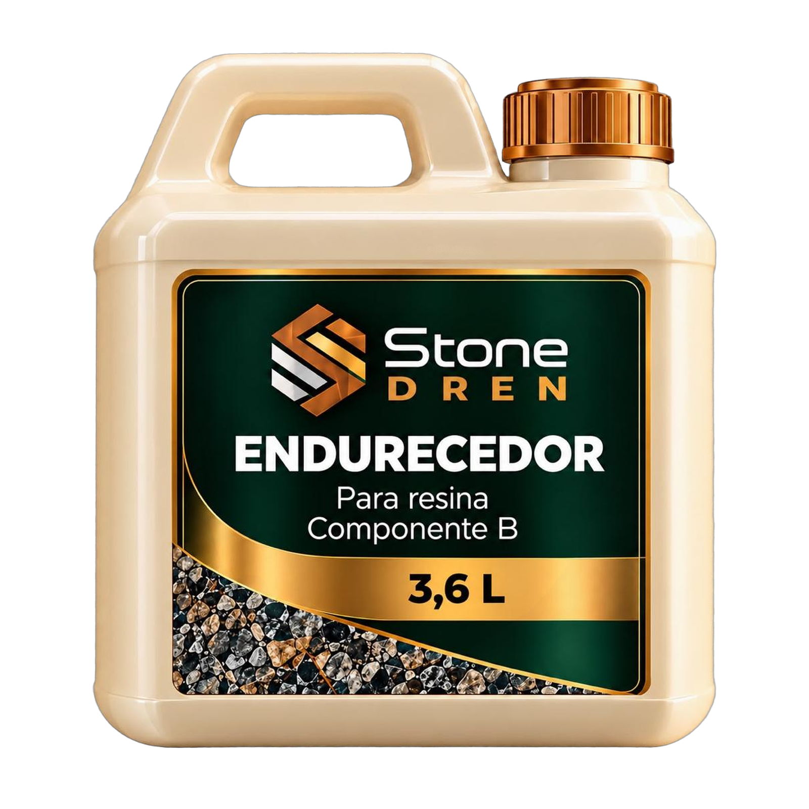

Balde 16 L
Resina Epóxi
Aglutinante que une as pedras do piso drenante. Usada com o Endurecedor Stone Dren.
Franquia Stone Dren · Piso drenante
Pedra natural unida por resina forma um piso permeável: a água atravessa a camada de pedra em vez de empoçar na superfície. A Stone Dren leva esse sistema para a sua região com produto, treinamento, equipamento e uma rede de aplicadores.
Como funciona
No piso drenante Stone Dren, as pedras são misturadas com a resina e o endurecedor e espalhadas sobre uma base preparada. A resina envolve cada grão e deixa vazios entre eles. É por esses vazios que a água desce, por isso a base também é preparada para receber e escoar essa água.
A camada é permeável: a chuva passa por entre as pedras até a base preparada.
Aplicação contínua, sem rejunte entre peças.
Cinco cores de pedra para compor o acabamento de cada projeto.
Calçadas, garagens, entorno de piscina e jardins, com espessura e base definidas para cada uso.
Loja modelo
A unidade Stone Dren trabalha com a linha completa: a pedra, a resina e o endurecedor do piso drenante, a base, o reforço, os produtos complementares, o equipamento de mistura e as ferramentas de aplicação.


Pedra natural
O saco tem janela transparente: a pedra fica à vista na embalagem, então o cliente escolhe a cor olhando o próprio material. São cinco cores na linha:
Fotos de referência. A tonalidade da pedra natural varia de lote para lote.
Balde 16 L
Aglutinante que une as pedras do piso drenante. Usada com o Endurecedor Stone Dren.

Balde 16 L
Alternativa em poliuretano para o mesmo sistema. A equipe técnica indica a resina para cada tipo de obra.

Galão 3,6 L
Componente que faz a resina curar. A proporção de mistura segue o rótulo e a ficha técnica do produto.

Balde 16 L
Produto da linha para bordas e prainhas de piscina.

Balde 16 L
Granito líquido, um revestimento para outras áreas da obra. Não é um piso drenante.

Pulverizador
Fixador de pedras naturais aplicado em spray para manter no lugar as pedras decorativas de jardim.

Pulverizador
Limpador de óleo e gordura para pedras e superfícies da linha Stone Dren.

Saco valvulado
Brita para a base drenante, quando o piso é aplicado sobre o solo.
Reforço
Tela de reforço da laje de concreto nas garagens. O tipo de malha e o uso são indicados pela equipe técnica para cada obra.

Venda e locação
Misturadores para pedra, resina e endurecedor, disponíveis para aplicadores e clientes comprarem ou alugarem.

Aplicação
Desempenadeiras de vários tamanhos e modelos e rodo dispersor, que facilita espalhar a pedra.
Imagens ilustrativas das embalagens. Resinas, endurecedores e fixadores são produtos químicos: leia o rótulo e a Ficha com Dados de Segurança (FDS) antes de usar.
Calculadora de piso drenante
Monte a obra por ambientes: informe a metragem e o tipo de área, escolha a resina e a cor da pedra. A calculadora estima a pedra, a resina, a brita e a malha, mostra as premissas do cálculo e envia a lista para a equipe comercial.
Atualiza enquanto você digita.
Área total
0m²
Pedra
kg
Resina
kits
Brita
sacos
Amostra 3D da camada, ilustrativa, em escala real. A lata em cima é de refrigerante, 350 ml (12 cm de altura), para comparar o tamanho e a espessura.
Para ver as quantidades, informe nome, WhatsApp, cidade e perfil. Com a lista pronta, você pode enviá-la ao comercial pelo WhatsApp.Para ver as quantidades e receber a lista no seu e-mail, informe nome, e-mail, WhatsApp, cidade e perfil. O comercial recebe uma cópia para confirmar as quantidades com você.
| Uso | Camada de referência | Grão da pedra | Sobre o solo | Outras bases |
|---|---|---|---|---|
| Jardim (caminho decorativo) | 12 mm | até 4 mm | brita compactada de 10 cm | contrapiso existente |
| Calçada (área de pedestre) | 20 mm | até 6 mm | brita compactada de 10 cm | contrapiso existente |
| Entorno de piscina (borda e área molhada) | 15 mm | 2 a 4 mm | não calculado: consulte a equipe técnica | contrapiso existente com caimento de 2% (consumo a confirmar) |
| Garagem (carro leve) | 30 mm | 4 a 6 mm | laje de concreto armado de 8 cm com malha POP sobre brita compactada de 15 cm | concreto ou asfalto existente; direto sobre brita, consulte a equipe técnica |
Espessuras de referência, ajustáveis na calculadora. A espessura final é definida pela equipe técnica ou pelo aplicador, conforme a base e o tráfego.
Rede de aplicadores
O sistema Stone Dren liga quem precisa do piso drenante a quem sabe aplicar, e o material sai da unidade da região.
A divulgação da Stone Dren traz o cliente até o site e a calculadora.
Informa a metragem e recebe a lista de material da obra.
O contato vai para o comercial, que pode indicar aplicadores da região.
O material da obra sai da unidade Stone Dren mais próxima.
Cada obra bem aplicada mostra o sistema para novos clientes da região.
Para aplicadores
Aplicadores cadastrados passam a fazer parte da lista que o comercial consulta para atender clientes da região.
Treinamento
A Stone Dren abre turmas de treinamento e capacitação para quem quer aprender a aplicar o piso drenante e os outros produtos da linha. As próximas datas saem pelo comercial.
A franquia
A unidade Stone Dren abastece os aplicadores da região, atende o cliente final, vende e aluga equipamento e forma a mão de obra que aplica o sistema.
Itens em definição. A lista final, com o que está incluído em cada formato, consta da Circular de Oferta de Franquia (COF).
Três formatos em estudo, para caber em cidades e perfis de investidor diferentes. Estrutura, investimento e condições de cada um constam da COF.
Para começar
Unidade compacta, pensada para cidades menores.
Loja completa
Loja com showroom e estoque completo da linha.
Distribuição regional
Operação regional que abastece aplicadores e outras cidades.
As informações desta página são apenas informativas e não constituem oferta, proposta ou promessa de resultado. A franquia Stone Dren segue a Lei nº 13.966/2019. Investimento estimado, taxa de franquia, royalties, território, fornecedores, suporte e contrato estão na Circular de Oferta de Franquia (COF), entregue ao candidato pelo menos 10 dias antes da assinatura de qualquer contrato ou pré-contrato e antes do pagamento de qualquer taxa. Nenhum valor é cobrado antes desse prazo. Faturamento e lucro dependem da gestão, da localização e do mercado de cada unidade e não são garantidos. Recomendamos analisar a COF com advogado e contador de sua confiança.
Dúvidas frequentes
É um piso que deixa a água da chuva atravessar a superfície em vez de ficar parada nela. Há versões de concreto permeável, como placas e blocos, e versões de pedra unida por resina. O piso Stone Dren é deste segundo tipo: pedra natural misturada com resina e endurecedor. A resina une as pedras e deixa vazios entre elas, por onde a água passa até a base.
Em calçadas, garagens, entorno de piscina, jardins e outras áreas externas. A espessura, a base e o reforço mudam conforme o uso e são definidos pela equipe técnica ou pelo aplicador.
Cinco: Branca, Palha, Cinza, Preta e Ouro. A pedra vem em sacos de 25 kg com janela transparente, então dá para escolher a cor olhando o próprio material. A tonalidade da pedra natural varia de lote para lote.
A drenagem depende da base. Sobre o solo, a pedra vai em cima de uma camada de brita compactada, que recebe a água. Sobre um contrapiso existente, a base precisa ter caimento para a água escoar. A equipe técnica ou o aplicador avalia o local antes da obra.
Depende do uso. A calculadora parte de espessuras de referência para cada tipo de área, que você pode ajustar: 12 mm em jardim, 20 mm em calçada, 15 mm no entorno de piscina e 30 mm em garagem (tabela da versão 2026-09, ainda provisória). A espessura final é definida pela equipe técnica ou pelo aplicador, conforme a base e o tráfego.
Em garagem de carro leve, sim, com a base certa. Sobre o solo, a pedra com resina vai em cima de uma laje de concreto armada com malha POP, apoiada numa camada de brita compactada. Sobre concreto ou asfalto que já existe, ela é aplicada sobre essa base, que precisa ter caimento para a água escoar. Espessura, base e reforço são definidos pela equipe técnica para cada obra.
Pode. O entorno de piscina é um dos usos do sistema. Na calculadora, esse tipo de área vale sobre contrapiso existente com caimento para a água escoar; sobre o solo, consulte a equipe técnica. Para bordas e prainhas, a linha tem o Piscina Praia. Espessura e base são definidas pela equipe técnica.
Não há um valor único por m². O custo muda com a área, o tipo de uso, que define espessura e base, a resina escolhida e a aplicação. A calculadora estima o material da obra, mas não mostra preço. Preço, frete, prazo e condições constam só do orçamento formal, passado pelo comercial depois que você envia a lista.
Depende da espessura, que muda com o uso, e da base. A calculadora estima a pedra, a resina, a brita e a malha a partir da metragem e do tipo de área de cada ambiente e mostra as premissas do cálculo. São estimativas de referência: as quantidades finais são confirmadas no orçamento formal do comercial.
As duas funcionam no mesmo sistema. A indicação depende do local, da exposição ao sol e do tipo de uso, e a equipe técnica ou o aplicador recomenda a melhor opção para a sua obra.
Pode, mas o resultado depende da preparação da base, da mistura e do acabamento. Quem quer aprender pode fazer o treinamento, e quem prefere contratar pode pedir ao comercial a indicação de um aplicador treinado da região.
O piso drenante é a pedra natural unida por resina, que deixa a água passar. O Gran Liqui é um granito líquido, um revestimento para outras áreas da obra, e não é um piso drenante.
Placas e intertravados são peças assentadas lado a lado. O piso Stone Dren é aplicado de forma contínua, sem rejunte entre peças, com a pedra natural à vista em cinco cores. A escolha depende do uso e da base da obra.
Resinas, endurecedores e fixadores são produtos químicos. Use luvas, óculos e máscara adequados, aplique em local ventilado, mantenha fora do alcance de crianças e animais e leia o rótulo e a Ficha com Dados de Segurança (FDS) antes de usar.
Fale com o comercial pelo botão de cadastro. Aplicadores cadastrados passam a fazer parte da lista consultada para atender clientes da região e têm acesso a treinamento e a mixers para compra ou locação.
Três formatos estão em estudo: Express, unidade compacta pensada para cidades menores; Center, loja com showroom e estoque completo da linha, o modelo principal; e Hub, operação regional que abastece aplicadores e outras cidades. Estrutura, investimento e condições de cada um constam da Circular de Oferta de Franquia (COF).
Investimento, taxas e condições são apresentados na Circular de Oferta de Franquia, entregue ao candidato pelo menos 10 dias antes de qualquer assinatura ou pagamento. Fale com o comercial para receber a apresentação.
Fale com o comercial
Conte onde você está e qual formato de unidade faz sentido para você. O comercial explica o modelo e os próximos passos.